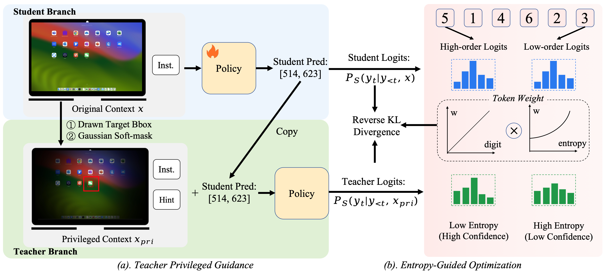
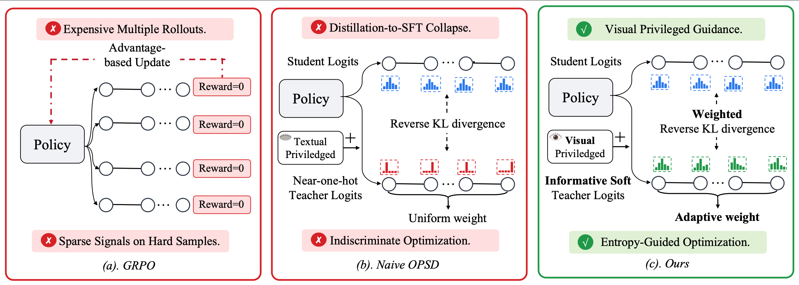

First exploration of OPSD in the GUI grounding domain, offering an efficient alternative to GRPO.
Visually grounded teacher guidance with entropy-aware distillation for rich and reliable supervision.
Single rollout with dense token-level supervision, ~4x faster than GRPO-based methods.
Graphical User Interface (GUI) grounding maps natural language instructions to precise interface locations for autonomous interaction. Recent advances leveraging reinforcement learning (e.g., GRPO) have achieved strong performance, but these methods require expensive multiple rollouts and suffer from sparse signals on hard samples. These limitations motivate exploring on-policy self-distillation (OPSD), which provides efficient, dense token-level supervision from a single rollout, yet its applicability to visual domains such as GUI grounding remains unexplored. In this paper, we present GUI-SD (GUI Grounding via Self-Distillation), the first OPSD framework tailored for GUI grounding. It combines visually enriched privileged context with entropy-guided distillation to deliver rich, targeted token-level supervision for precise coordinate generation. Specifically, GUI-SD builds the teacher's privileged context by highlighting the ground-truth region with a bounding box and applying a Gaussian soft-mask, offering informative yet constrained guidance that preserves soft distributional signals from the teacher. Furthermore, it adaptively weights tokens based on digit-position significance and teacher confidence, concentrating optimization on the most impactful coordinate tokens. Extensive evaluations on six representative benchmarks demonstrate that GUI-SD substantially outperforms GRPO-based methods and naive OPSD in both accuracy and training efficiency. The code and training data will be publicly released.
GUI-SD consists of two complementary components: (a) Teacher Privileged Guidance — the teacher receives a visually enriched privileged context (drawn bounding box + Gaussian soft-mask), while the student receives the original image. Both share the same policy weights. (b) Entropy-Guided Optimization — computes reverse KL divergence between teacher and student logits at each token position, weighted by positional credit assignment (higher weight for high-order digits) and entropy-gated supervision (higher weight for low-entropy, high-confidence teacher predictions).

Figure 3. Overview of the GUI-SD framework. (a) The teacher takes a privileged context xpri, which augments the student's original input x with visual cues and a hint prompt, to produce richer soft labels for guiding the student. (b) The training objective is a weighted KL divergence, where w(t) prioritizes high-order tokens via positional credit and filters unreliable supervision via entropy gating on teacher confidence.
(a) GRPO requires expensive multiple rollouts and produces zero reward on hard samples. (b) Naive OPSD forwards the policy twice and distills via reverse KL with uniform per-token weight, yet suffers from distillation-to-SFT collapse and indiscriminate optimization. (c) GUI-SD addresses both issues via teacher privileged guidance and entropy-guided optimization. By replacing sparse outcome-level rewards with dense token-level guidance, OPSD provides an appealing alternative for improving both training efficiency and supervision quality.

Figure 1. (a) GRPO requires expensive multiple rollouts and produces zero reward on hard samples. (b) Naive OPSD forwards the policy twice and distills via reverse KL with uniform per-token weight, yet suffers from distillation-to-SFT collapse and indiscriminate optimization. (c) Ours addresses both issues via teacher privileged guidance and entropy-guided optimization.
GUI grounding accuracy on six representative benchmarks. Bold indicates the best results.
| Method | Time/epoch | SSP | SS2 | UIV | OSW-G | OSW-GR | MMG | Avg. |
|---|---|---|---|---|---|---|---|---|
| Qwen3-VL-Instruct | — | 53.6 | 93.2 | 25.2 | 58.7 | 67.4 | 83.0 | 63.5 |
| + GRPO-Binary | 16.9 | 56.8 | 94.6 | 27.6 | 61.2 | 68.6 | 84.3 | 65.5 |
| + GRPO-Distance | 16.7 | 56.6 | 93.8 | 27.5 | 62.1 | 69.9 | 83.3 | 65.5 |
| + GRPO-Gaussian | 16.8 | 57.4 | 94.0 | 28.2 | 61.9 | 70.0 | 83.7 | 65.9 |
| + GUI-SD (Ours) | 4.2 | 60.7 | 95.1 | 33.3 | 64.0 | 70.9 | 86.7 | 68.4 |
GUI-SD surpasses existing GUI grounding methods in average accuracy across six representative benchmarks:
@article{zhang2025guisd,
title = {Learn where to Click from Yourself: On-Policy Self-Distillation for GUI Grounding},
author = {Zhang, Yan and Wu, Daiqing and Shen, Huawen and Zhou, Yu and Ma, Can},
journal = {arXiv preprint},
year = {2025},
}